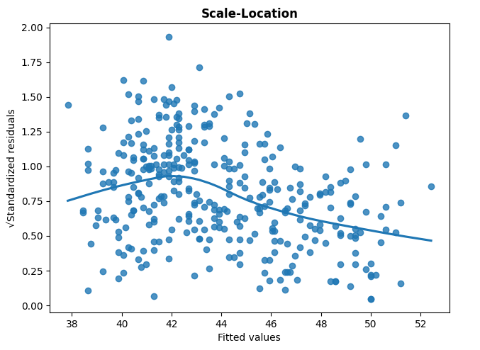

3: Regression
Session 3: Regression
Start
Goal: Foray into regression
Objective: Implement various linear regression models
Palmer Penguins
This semester, Derek is trying out this idea where he will present the main idea at the of each session in the same data set: palmerpenguins.

Scatterplot
Example: Can we predict the bill_length of a penguin whose body_mass is 5 kg?
Best-Fit Line
lin_fit <- lm(bill_length_mm ~ body_mass_g, data = penguins)
y_pred <- predict(lin_fit, newdata = data.frame(body_mass_g = 5000))Prediction

Commentary
How reliable is the prediction?
How reliable is the [linear] model?
Can we deploy a different model?
Do we have all of the data, or just a sample?
- Does this prediction apply to all similar penguins?
DCP1
DCP1
Model Diagnostics
Following discussion in the ISLP textbook, we proceed to perform some diagnostics on the linear regression process.
The nearly horizontal LOESS (summary) line may indicate that this data is appropriate for this model. There may be an outlier (in this point of view).
The QQ plot shows that the residuals are somewhat normally distributed (perhaps with less reliable data in the tails).

Since none of the standardized residuals are greater than 3 in magnitude, our data set does not have outliers (in this point of view)
We seem to have no outliers (in this point of view) as data points have similar leverage on the linear regression model (i.e. removing one data point would drastically change the regression coefficients)
Linear Model
\[\hat{y} = a + bx\]
- \(\hat{y}\): predicted value
- \(a\): intercept
- \(b\): slope
Residuals
A residual is the difference between a predicted value and its true value.

Method of Least Squares
Idea: The best-fit line is where the sum-of-squared residuals is minimized.
\[E(a,b) = \sum_{i=1}^{n} (y_{i} - a - bx_{i})^{2}\]
Claim: \[a = \frac{ (\sum y_{i})(\sum x_{i}^{2}) - (\sum x_{i})(\sum x_{i}y_{i}) }{ n\sum x_{i}^{2} - (\sum x_{i})^{2} }, \quad b = \frac{ n\sum x_{i}y_{i} - (\sum x_{i})(\sum y_{i}) }{ n\sum x_{i}^{2} - (\sum x_{i})^{2} }\]
(optional) Proof
Search for a critical point by setting the partial derivatives (along with the Chain Rule) equal to zero.
\[0 = \frac{\partial E}{\partial a} = -2\sum_{i = 1}^{n} (y_{i} - a - bx_{i}) = 2an + 2b\sum_{i = 1}^{n}x_{i} - 2\sum_{i = 1}^{n} y_{i}\] \[0 = \frac{\partial E}{\partial b} = -2\sum_{i = 1}^{n} (y_{i} - a - bx_{i})x_{i} = 2a\sum_{i = 1}^{n}x_{i} + 2b\sum_{i = 1}^{n}x_{i}^{2} - 2\sum_{i = 1}^{n} x_{i}y_{i}\]
Create a matrix system of equations.
\[\left[ \begin{array}{cc} n & \sum_{i = 1}^{n}x_{i} \\ \sum_{i = 1}^{n}x_{i} & \sum_{i = 1}^{n}x_{i}^{2} \\ \end{array}\right] \left[ \begin{array}{c} a \\ b \end{array}\right] = \left[ \begin{array}{c} \sum_{i = 1}^{n} y_{i} \\ \sum_{i = 1}^{n} x_{i}y_{i} \end{array}\right] \]
Employ a matrix inverse.
$$ \[\begin{array}{rcl} \left[ \begin{array}{c} a \\ b \end{array}\right] & = & \left[ \begin{array}{cc} n & \sum_{i = 1}^{n}x_{i} \\ \sum_{i = 1}^{n}x_{i} & \sum_{i = 1}^{n}x_{i}^{2} \\ \end{array}\right]^{-1}\left[ \begin{array}{c} \sum_{i = 1}^{n} y_{i} \\ \sum_{i = 1}^{n} x_{i}y_{i} \end{array}\right] \\ ~ & ~ & ~ \\ \left[ \begin{array}{c} a \\ b \end{array}\right] & = & \frac{1}{n\sum x_{i}^{2} - (\sum x_{i})^{2}} \left[ \begin{array}{cc} \sum_{i = 1}^{n}x_{i}^{2} & -\sum_{i = 1}^{n}x_{i} \\ -\sum_{i = 1}^{n}x_{i} & n \\ \end{array}\right] \left[ \begin{array}{c} \sum_{i = 1}^{n} y_{i} \\ \sum_{i = 1}^{n} x_{i}y_{i} \end{array}\right] \\ ~ & ~ & ~ \\ \left[ \begin{array}{c} a \\ b \end{array}\right] & = & \frac{1}{n\sum x_{i}^{2} - (\sum x_{i})^{2}} \left[ \begin{array}{c} (\sum y_{i})(\sum x_{i}^{2}) - (\sum x_{i})(\sum x_{i}y_{i}) \\ n\sum x_{i}y_{i} - (\sum x_{i})(\sum y_{i}) \end{array}\right] \\ \end{array}\]$$
Train-Test Split
Today’s big idea is the training-testing split.
- image source: Michael Galarnyk
Training and Testing Sets
In a machine learning workflow, it is customary to partition the data into a training set and a test set.
- we build a model on the training set
- we evaluate the model on the test set
One recommendation is to use a 70:30 ratio for the number of observations that go into the training set and the test set respectively.
Train-Val-Test
In the near future, when comparing results between different types of models, we want to prevent leaking data into the test set. Thus, each model has a stage that uses a validation set.
- we build a model on the training set
- we evaluate the model on the validation set
- we evaluate the model type on the test set
One recommendation is to use a 70:15:15 partition for the number of observations that go into the training set, validation set, and the test set respectively.
DCP2
DCP2
Metric
To evaluate proposed models, we use the same metric on the test data for all of the models.
MSE
For regression tasks, a common metric is MSE (mean-squared error)
\(\text{MSE} = \frac{1}{n}\sum_{i=1}^{n}(\hat{y}_{i} - y_{i})^{2}\)
Since we are discussing errors (or residuals), the lowest value for MSE points toward the best model.
Ethics Enclave: Music
“… she followed a link the fan had posted and was taken to what appeared to be her latest release.”But I didn’t recognise it because I hadn’t released a new album,” Portman says.
“I clicked through and discovered an album online everywhere - on Spotify and iTunes and all the online platforms.
“It was called Orca, and it was music that was evidently AI-generated, but it had been cleverly trained, I think, on me.”“”
Hyperparameters
Models are fit to the training data by finding the best parameter values (e.g. coefficients) through optimization.
The shape of the models are affected by hyperparameters
Polynomial Regression
\(d = 2: \hat{y} = \beta_{0} + \beta_{1}X_{1} + \beta_{2}X_{1}^{2}\)
\(d = 3: \hat{y} = \beta_{0} + \beta_{1}X_{1} + \beta_{2}X_{1}^{2} + \beta_{3}X_{1}^{3}\)
Degree is a hyperparameter
For polynomial regression, the degree \(d\) is a hyperparameter.
- parameters: \(\beta_{0}, \beta_{1}, \beta_{2}, ...\)
- hyperparametr: \(d\)
Multiple Linear Regression
\[\hat{y} = \beta_{0} + \beta_{1}X_{1} + \beta_{2}X_{2} + \beta_{3}X_{3} + ...\]
is likewise solved by ordinary least squares
DCP3
DCP3
Penalization
Later, we will discuss the notion of variance (in the test set error totals) for machine learning. For now, we try out penalization methods to suppress some of the coefficients to try to reduce variance.
Ridge Regression
Ridge Regression
\(\hat{y} = \beta_{0} + \beta_{1}X_{1} + \beta_{2}X_{2} + \alpha\sum_{i = 1}^{2} \beta_{i}^{2}\)
where \(\alpha > 0\) is the penalization coefficient.
- ridge regression is also called L2 penalization
LASSO Regression
\(\hat{y} = \beta_{0} + \beta_{1}X_{1} + \beta_{2}X_{2} + \alpha\sum_{i = 1}^{2} |\beta_{i}|\)
where \(\alpha > 0\) is the penalization coefficient.
- LASSO regression (least absolute shrinkage and selection operator) is also called L1 penalization
Elastic Net
For these penalized linear models, we proceed to elastic net, which is a linear combination of the previous ridge and LASSO ideas.
\(\hat{y} = \beta_{0} + \beta_{1}X_{1} + \beta_{2}X_{2} + \alpha[L\sum_{i = 1}^{2} \beta_{i}^{2}+ (1-L)\sum_{i = 1}^{2} |\beta_{i}|]\)
- \(\alpha\): penalization coefficient
- \(L\): \(L1\) ratio
Quo Vadimus?
due this Friday:
- Precept 2
talk to some of your classmates and draft plans to form groups (toward the midterm and semester projects)
Footnotes
(optional) Additional Resources
- OLS description and proof by Professor Michael J Rosenfeld
- Train Test Split by Michael Galanyk
Session Info
sessionInfo()R version 4.5.1 (2025-06-13 ucrt)
Platform: x86_64-w64-mingw32/x64
Running under: Windows 10 x64 (build 19045)
Matrix products: default
LAPACK version 3.12.1
locale:
[1] LC_COLLATE=English_United States.utf8
[2] LC_CTYPE=English_United States.utf8
[3] LC_MONETARY=English_United States.utf8
[4] LC_NUMERIC=C
[5] LC_TIME=English_United States.utf8
time zone: America/New_York
tzcode source: internal
attached base packages:
[1] stats graphics grDevices utils datasets methods base
other attached packages:
[1] lubridate_1.9.4 forcats_1.0.0 stringr_1.5.1
[4] dplyr_1.1.4 purrr_1.1.0 readr_2.1.5
[7] tidyr_1.3.1 tibble_3.3.0 ggplot2_3.5.2
[10] tidyverse_2.0.0 palmerpenguins_0.1.1
loaded via a namespace (and not attached):
[1] Matrix_1.7-3 gtable_0.3.6 jsonlite_2.0.0 compiler_4.5.1
[5] tidyselect_1.2.1 splines_4.5.1 scales_1.4.0 yaml_2.3.10
[9] fastmap_1.2.0 lattice_0.22-7 R6_2.6.1 labeling_0.4.3
[13] generics_0.1.4 knitr_1.50 htmlwidgets_1.6.4 pillar_1.11.0
[17] RColorBrewer_1.1-3 tzdb_0.5.0 rlang_1.1.6 stringi_1.8.7
[21] xfun_0.52 timechange_0.3.0 cli_3.6.5 mgcv_1.9-3
[25] withr_3.0.2 magrittr_2.0.3 digest_0.6.37 grid_4.5.1
[29] rstudioapi_0.17.1 hms_1.1.3 nlme_3.1-168 lifecycle_1.0.4
[33] vctrs_0.6.5 evaluate_1.0.4 glue_1.8.0 farver_2.1.2
[37] rmarkdown_2.29 tools_4.5.1 pkgconfig_2.0.3 htmltools_0.5.8.1